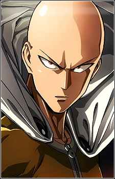

|  |
Saitama (サイタマ)Race: HumanAge: 25 Height: 175 cm (5'9") Weight: 70 kg (154 lbs) Location: Z-City Abilities: Immeasurable Strength, Immeasurable Speed and Reflexes, Infinite Stamina, Supernatural Senses, Invulnerability, Indomitable Will Occupation: Superhero |
| Affiliation: | Association |
| Partner(s): | Genos Hero Association |
|
|